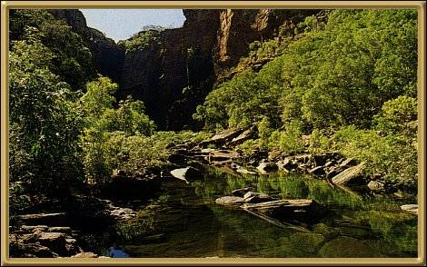

Photographer: Unknown
Kakadu National Park has been World Heritage Listed since 1984. It's estimated that there are over 275 species of birds, 10,000 or more species of insects, 25 different species of frogs and more than 75 types of reptiles. As well, approximately 1600 species of plants! which makes up more than a majority of the Top End's plant life! It is an area of vast diversity and beauty, and rich in Aboriginal history. Take time when you visit here - it is incredible!